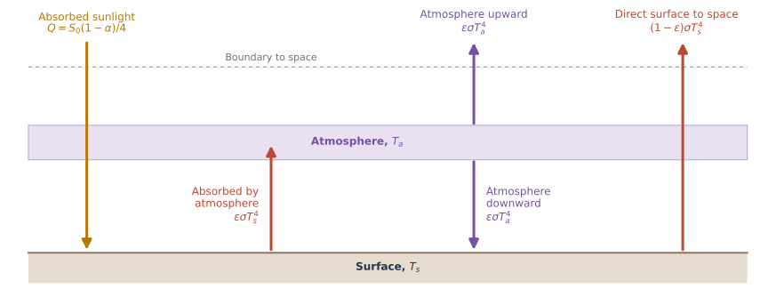
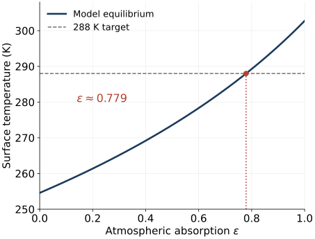
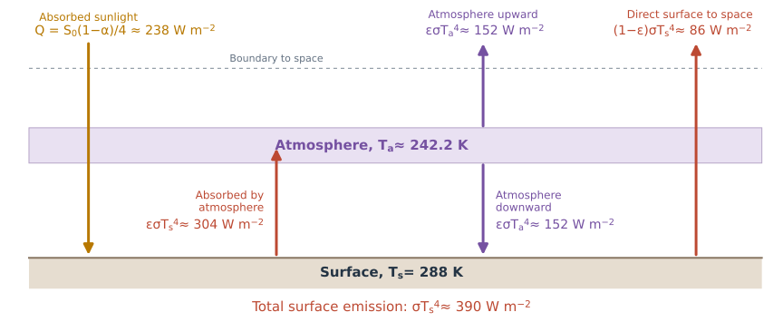
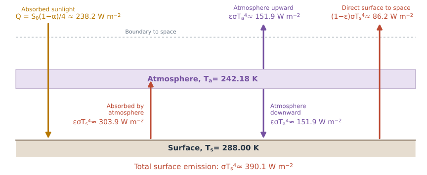
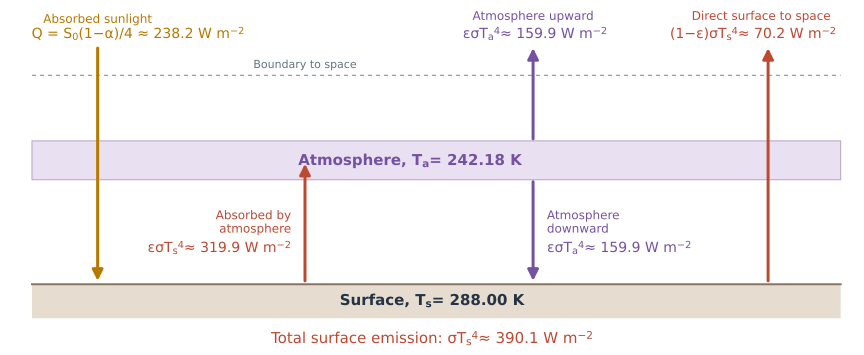
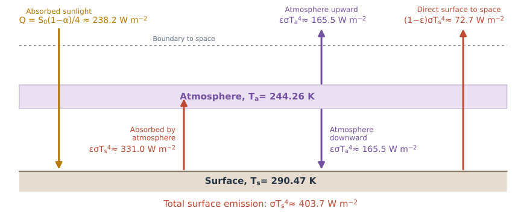
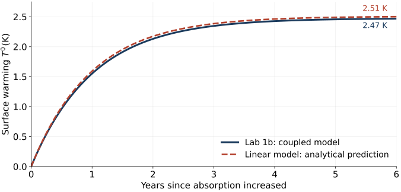
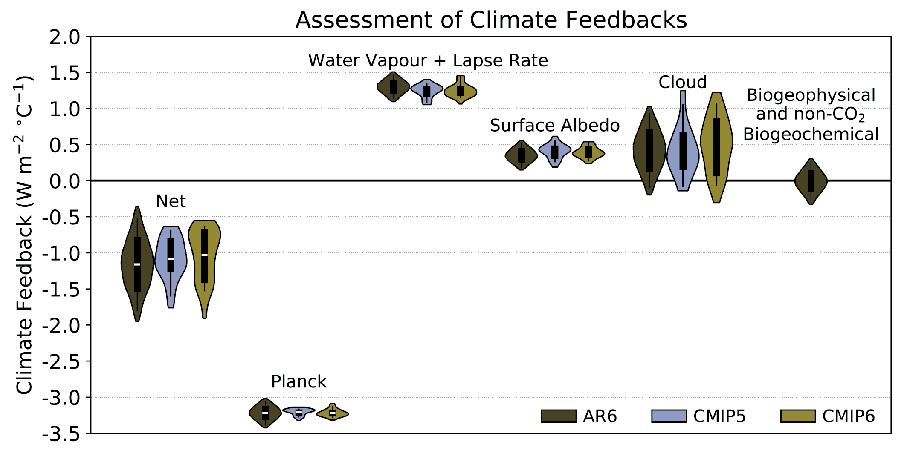
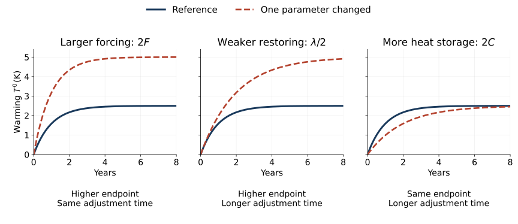

Week 3

Which radiation pathways disappear in each limit?
Surface
\[C_s\frac{dT_s}{dt}=Q+\epsilon\sigma T_a^4-\sigma T_s^4\]
The surface still loses its entire emission, wherever that radiation goes.
Atmosphere
\[C_a\frac{dT_a}{dt}=\epsilon\sigma T_s^4-2\epsilon\sigma T_a^4\]
Only the absorbed fraction heats the layer. Emission leaves in both directions.
Adding the budgets gives:
\[C_s\frac{dT_s}{dt}+C_a\frac{dT_a}{dt} =Q-\left[(1-\epsilon)\sigma T_s^4+\epsilon\sigma T_a^4\right].\]
The bracket is outgoing longwave radiation (OLR): direct surface radiation + upward atmospheric emission.
Set both temperature tendencies to zero.
For \(\epsilon>0\), atmospheric balance gives
\[T_a^4=\frac{T_s^4}{2}.\]
Substitute into the surface balance:
\[Q=(1-\epsilon/2)\sigma T_s^4.\]
\[T_s=\left[\frac{Q}{\sigma(1-\epsilon/2)}\right]^{1/4}\]

At \(\epsilon=0\), the surface formula still applies, but atmospheric balance leaves \(T_a\) undetermined.
Optional practice: Lab 1a explores this curve and the energy budgets. Try it in your own time.
\(\epsilon\approx0.779\). Flux values are rounded to whole numbers.

Do the surface, atmosphere, and planetary budgets each balance?
In this model \(\epsilon\) is a parameter that represents the effect of greenhouse gases. How does this system behave if we were to “increase greenhouse gases”?
Start at equilibrium:
\[T_s=288\ \mathrm{K},\qquad T_a\approx242.2\ \mathrm{K}.\]
At \(t=0\), increase absorption from \(\epsilon\approx0.779\) to \(\epsilon=0.82\) and hold it there.
Keep absorbed sunlight \(Q\) and both heat capacities unchanged.
Before running the model (Lab 1b):
- What will happen to the temperature?
- Do temperatures change immediately?
- Which radiation fluxes change immediately?
- Does the planet initially gain or lose energy?
- What role do the heat capacities play?
1. Old equilibrium · \(\epsilon\approx0.779\)

\(\mathrm{OLR}=Q\approx238.2\ \mathrm{W\,m^{-2}},\qquad N=0.\)
Both reservoirs are in balance.
2. Immediately after the change · \(\epsilon=0.82\)

\(\mathrm{OLR}\approx230.2\ \mathrm{W\,m^{-2}},\qquad N\approx+8.0\ \mathrm{W\,m^{-2}}.\)
Temperatures have not changed. The surface gains energy; the atmosphere is initially balanced.
3. New equilibrium · \(\epsilon=0.82\)

\(\mathrm{OLR}=Q\approx238.2\ \mathrm{W\,m^{-2}},\qquad N=0.\)
Both temperatures are higher. Total OLR returns to its original value; its components differ.
\[C_s\frac{dT_s}{dt}=Q+\epsilon\sigma T_a^4-\sigma T_s^4\]
\[C_a\frac{dT_a}{dt}=\epsilon\sigma T_s^4-2\epsilon\sigma T_a^4\]
The lab solved these coupled, nonlinear equations numerically. A simple analytical description of their time evolution is harder to obtain.
What sets the amount of warming and the adjustment time?
As models grow more complex, interpreting their responses becomes harder too.
We will derive a linear energy-balance model to separate the roles of forcing, radiative restoring, and heat storage.
Assumption: the atmosphere adjusts much faster than the surface. Neglecting atmospheric heat storage, its budget stays approximately balanced:
\[T_a^4\approx\frac{T_s^4}{2}\qquad(\epsilon>0).\]
\(T_a\) follows \(T_s\) as the surface warms.
We now evolve just one temperature:
\[C_s\frac{dT_s}{dt}=Q-\mathrm{OLR}.\]
The OLR defined in the earlier slides simplifies to
\[\mathrm{OLR}=\left(1-\frac{\epsilon}{2}\right)\sigma T_s^4.\]
The greenhouse effect is retained in OLR. The radiation law is still nonlinear.
If we think in terms of small changes around a mean state, we can obtain useful framework (“model”) to think about the system.
After the step, hold \(\epsilon_1=0.82\) fixed.
Measure warming from the old equilibrium, \(T_{s0}=288\ \mathrm{K}\):
\[T'=T_s-T_{s0}.\]
For small warming, approximate the radiation response as
\[\mathrm{OLR}\approx\mathrm{OLR}(0^+)+\lambda T'.\]
Here \(\lambda>0\): as the surface and atmosphere warm, more energy escapes to space.
Forcing: the initial imbalance caused by changing \(\epsilon\).
\[F=Q-\mathrm{OLR}(0^+).\]
\(Q\) is unchanged in our experiment; \(F\) has units of \(\mathrm{W\,m^{-2}}\).
Substitute the linearized OLR into the energy budget:
\[C_s\frac{dT'}{dt}=Q-\mathrm{OLR}\approx F-\lambda T'.\]
Radiative restoring: \(\lambda T'\) is the increase in outgoing radiation as temperatures rise, reducing the imbalance.
We started with a nonlinear equation for \(T_s\). After these approximations, we have a linear equation for the warming, \(T'=T_s-T_{s0}\), which we can solve analytically.
\[F=\frac{\Delta\epsilon}{2}\sigma T_{s0}^4, \qquad\Delta\epsilon=\epsilon_1-\epsilon_0.\]
Forcing depends on the size of the absorption change and the initial temperature.
\[\lambda=4\left(1-\frac{\epsilon_1}{2}\right)\sigma T_{s0}^3.\]
Restoring strength depends on the new absorption and the temperature around which we linearize.
This temperature-only restoring response is analogous to the Planck feedback: warming increases radiation to space. In our sign convention, \(\lambda>0\) is stabilizing.
Here we can calculate these coefficients explicitly. In more complex models, they summarize the combined effects of many processes.
For constant \(F\), \(\lambda\), and \(C_s\), starting from \(T'(0)=0\), the linear model has the solution
\[T'(t)=\frac{F}{\lambda}\left(1-e^{-t/\tau}\right), \qquad \tau=\frac{C_s}{\lambda}.\]
Equilibrium warming: as \(t\to\infty\),
\[T'_{\mathrm{eq}}=\frac{F}{\lambda}.\]
Adjustment time: \(\tau=C_s/\lambda\) sets how quickly warming approaches that endpoint.
After one \(\tau\), about 63% of the equilibrium warming has occurred.
As in Lab 1b: larger heat capacity slows warming without changing the equilibrium temperature.
No fitting: use the parameters from Lab 1b to calculate
\(F\approx8.01\ \mathrm{W\,m^{-2}}\), \(\lambda\approx3.20\ \mathrm{W\,m^{-2}\,K^{-1}}\), and \(\tau\approx0.99\) years.

For more complex responses, fitting this form estimates \(T'_{\mathrm{eq}}\) and \(\tau\). Independently known forcing is needed to infer \(\lambda\) and \(C_s\) from those fitted values.
\[C\frac{dT'}{dt}\approx N\approx F-\lambda T'.\]
IPCC Chapter 7, Box 7.1 uses the same forcing–feedback relation: \(\Delta N=\Delta F+\alpha\Delta T\). Their feedback parameter \(\alpha=-\lambda\).
The single heat reservoir, \(C\,dT'/dt\), is an additional approximation. Real climate can have several adjustment times and changing feedbacks.
At the top of the atmosphere, absorbed sunlight minus outgoing longwave radiation gives the net energy input:
\[N=Q-\mathrm{OLR}\qquad(\mathrm{W\,m^{-2}}).\]
\(N>0\): more energy enters than leaves, so the planet accumulates energy.
The IPCC uses \(\Delta N=N-N_0\), the change from a reference state. Our initial state is in equilibrium: \(N_0=0\), so \(\Delta N=N\).
If \(E\) is stored energy per unit area,
\[\frac{dE}{dt}=N. \qquad\text{Our one-reservoir model:}\quad N=C\frac{dT'}{dt}.\]
Energy imbalance is the rate of energy accumulation in \(\mathrm{W\,m^{-2}}\). Accumulated energy is measured in \(\mathrm{J\,m^{-2}}\).

IPCC AR6 WGI, Figure 7.10 · Forster et al. (2021). The figure uses \(\alpha\): negative is stabilizing. Our \(\lambda=-\alpha\).
Why is the net restoring weaker than the Planck response alone? What would that imply for equilibrium warming?
How much equilibrium warming results from the same imposed forcing?
\[T'_{\mathrm{eq}}=\frac{F}{\lambda}.\]
Equilibrium climate sensitivity (ECS) is the equilibrium global surface warming after CO\(_2\) doubles and is held fixed.
In this linear framework,
\[\mathrm{ECS}=\frac{F_{2\times\mathrm{CO_2}}}{\lambda}, \qquad \tau=\frac{C}{\lambda}.\]
For the same forcing and heat capacity, weaker restoring means more equilibrium warming and a longer adjustment time.
ECS describes the eventual warming; \(\tau\) describes the pace of approach in this model. IPCC AR6, Chapter 7
Change one coefficient at a time; hold the other two fixed. Each experiment starts with a constant forcing step.

Illustrative reference: \(F=8\ \mathrm{W\,m^{-2}}\), \(\lambda=3.2\ \mathrm{W\,m^{-2}\,K^{-1}}\), \(C=10^8\ \mathrm{J\,m^{-2}\,K^{-1}}\).
Intro to Climate Modeling · Week 3